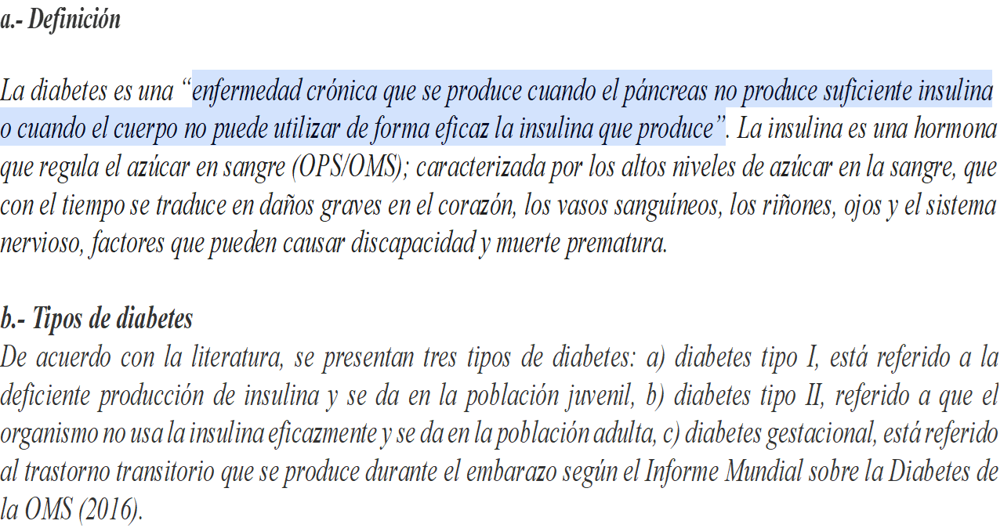

El presente informe, tiene como objetivo analizar las variables que intervienen en la enfermedad de diabetes para un sector de la población de interés, categorizada como adulto joven, dado a su creciente cifras que se registran en esta enfermedad, para ello se ha utilizado una muestra de 100,000 observaciones, tomado de la data set del curso, a fin que nos permita tomar acciones preventivas mediante evidencias del análisis de datos.
Según el articulo Factores modificables y riesgo de diabetes tipo2, en adulto jóvenes – un estudio transversal, la distribución de la población la categoriza en: < 45; {45-54}; {55-64}; > 64 años (Bohórquez at al.,2020), la OMS considera a adultos jóvenes {18-44}; adultos medio {45-59}; adulto mayor {60-74}; ancianos {75-90}
En este caso, nuestro interés se centra en tres subgrupos: Adulto jóvenes {25-44}; Adulto medio {45-59}; Adulto mayor {60 a mas }, descartando a los menores de 24 años.
En este contexto se reordena la base de datos, donde la variable dependiente del tipo categórica, dicotómica Y: Predicción de diabetes y un conjunto de ocho (8) variables independientes o predictores (Vi): (V1, V2,……….V8 ), de los cuales cuatro (4) son de tipo numérico continuo y cuatro (4) del tipo categórico.

¿Existe diferencia significativa de los grupos de población de Adultos jóvenes, Adulto medio y Adulto mayor y la enfermedad de diabetes, en Lima Metropolitana, 2024?
Determinar la diferencia significativa entre los grupos que presentan la enfermedad de diabetes, en Lima Metropolitana, 2024.
Existe diferencia significativa entre los grupos que presentan la enfermedad de diabetes, en Lima Metropolitana, 2024.